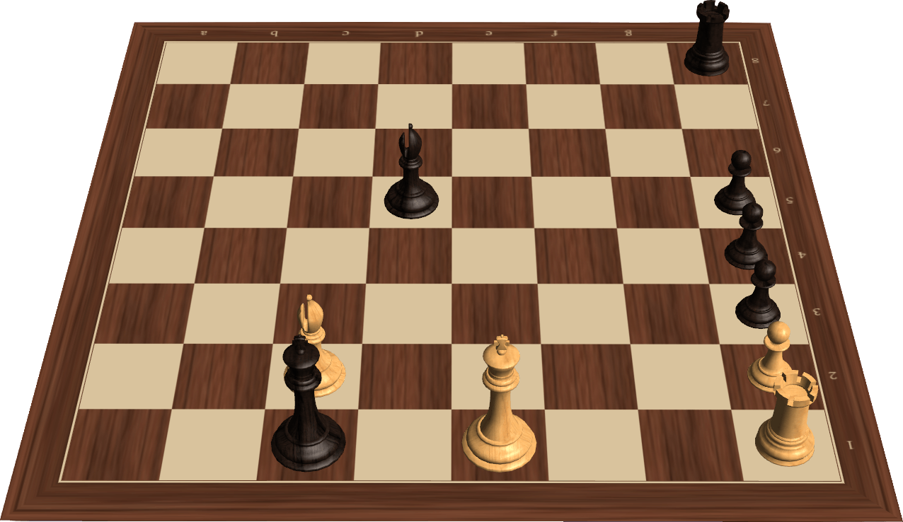

Что развивают шахматы?
Занятия шахматами способствуют развитию памяти, логике, внимания, усидчивости. Эта игра воспитывает волю (взялся — ходи), чувство ответственности (прежде, чем что-то сделать, подумай), развивает творческое начало: игрок может наделять фигуры невероятными свойствами — например, сделать пешку сильнее ферзя. Шахматы - это спорт, искусство и наука!

Немного из шахматной истории
Считается, что игра-прародитель шахмат, чатуранга, появилась в Индии более полутора тысяч лет назад.
Шахматы (от перс. "шах мат" - властитель умер) - игра 32 фигурами на 64-клеточной доске для двух игроков. Цель - поставить мат королю противника. На Руси шахматы появились в 9-10 веках и постепенно завоевали любовь не только среди знати, но и в народе. До середины XVIII века теория шахмат развивалась черепашьим темпом. Но постепенно шахматы становились всё более популярными, и в середине XIX началась унификация шахматных фигур и появились шахматные часы. И, наконец, в 1886 году прошёл первый чемпионат мира.